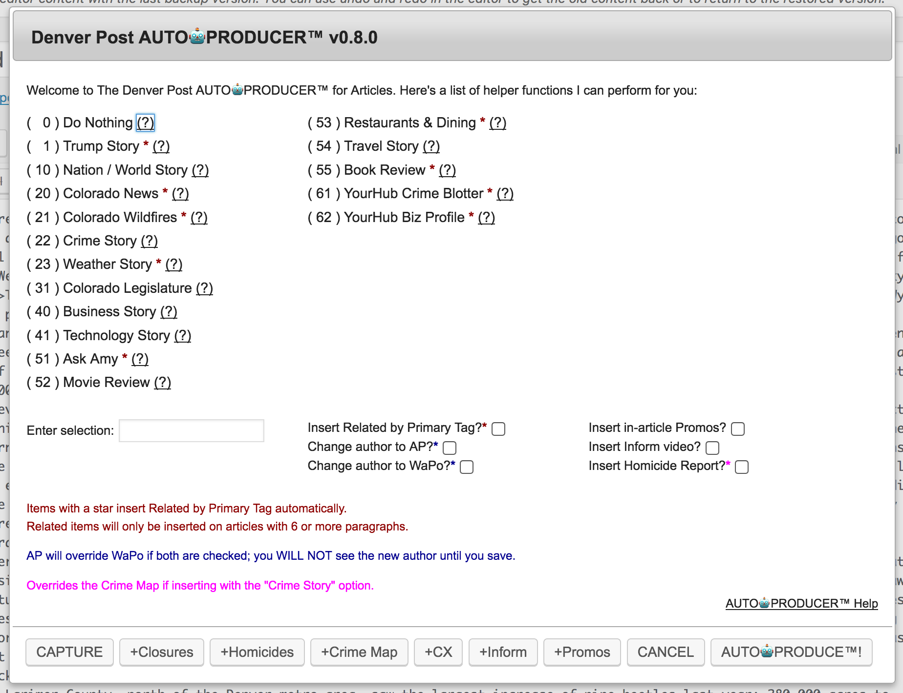
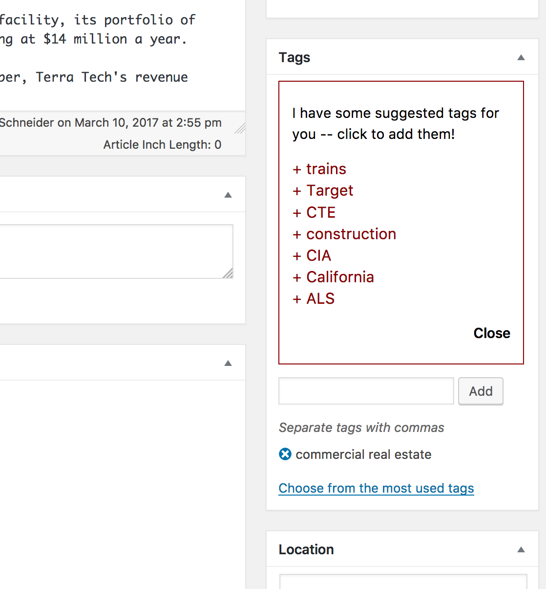
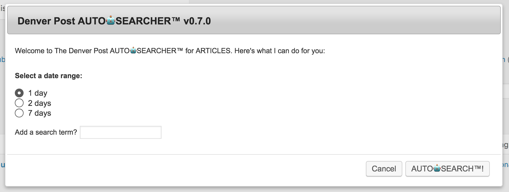
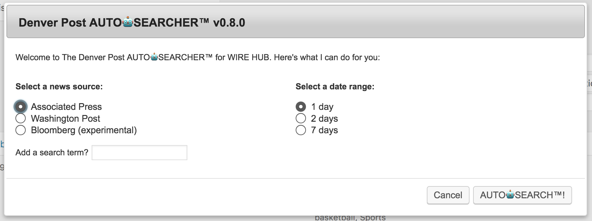
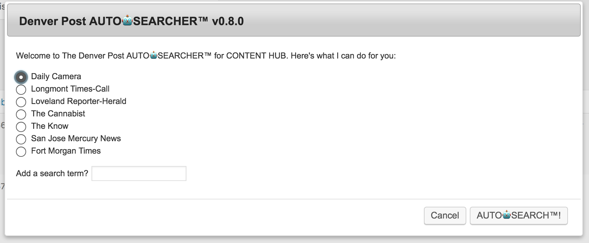

Denver Post AUTO🤖PRODUCER™ and AUTO🤖SEARCHER™ Help
Introduction
The goal of the AUTO🤖PRODUCER™ and AUTO🤖SEARCHER™ is to make repetitive production tasks for Denver Post Online producers and editors a lot faster. Here's how:
Filling out the date-range dropdown menus on a Wire Hub search required a minimum of 13 clicks with your mouse — or as many as 119 keystrokes (yes, I counted). With AUTO🤖SEARCHER™ you can search within date ranges of the last 24, 48 or 168 hours (seven days) in two clicks — or just a few keystrokes.
Limiting your search with a date range not only saves the seconds it would take to click (and the carpal tunnel!), but exponentially improves the speed with which the database can find and return your results. For every Wire Hub story you produce, AUTO🤖SEARCHER™ could save several minutes, which adds up to hours of productivity across the team each week.
Similarly, with AUTO🤖PRODUCER™ for Articles, you can execute in a couple of keystrokes and clicks what would take several dozen clicks — not to mention the inevitible lag on some drop-down menus — and reduce the repetitive part of your job by as much as several minutes per story. Yet another savings of hours of productivity, team-wide, each week.
We'd like to spend our time and talents getting good stories in front of readers' eyes, through excellent SEO, inviting social media promotion, and by including interactive tools and sources, such as documents, charts and graphs, slideshows, and more — not checking boxes.
AUTO🤖PRODUCER™ lets us do that.
Get AUTO🤖PRODUCER™
You can get AUTO🤖PRODUCER™ from The Denver Post Bookmarklets page — just visit the page and drag the bookmarklet icon to your web browser's Bookmarks bar.
Contribut to AUTO🤖PRODUCER™: Fork the repo on Github.
Problems or suggestions? File and issue on Github and assign it to Daniel J. Schneider.
AUTO🤖PRODUCER™ for Articles
Start AUTO🤖PRODUCER™ by clicking your bookmarklet. If you have an article open, AUTO🤖PRODUCER™ for Articles will start automatically.
You'll see something that looks like this:

AUTO🤖PRODUCER™ for Articles has a raft of features, most of which are somewhat self-explanatory. Just in case, here's a little guide.
Story types
The numbered list represents sets of Section and Tag selections that can be applied automatically. Enter the number in the input box and hit ENTER (or click AUTO🤖PRODUCE™) to apply the choices. Hover over the (?) to see what the selections will be.
- AUTO🤖PRODUCER™ can set, depending on your selection:
- Sections
- Tags
- Primary Section
- Primary Tag
- Apple News Section
- Story types with a red star automatically insert the Primary Tag Related shortcode.
- The Crime Story story type automatically inserts the Crime Map widget, and will prompt you for a type of crime or neighborhood name.
- The Weather Story story type automatically inserts the Weather widget.
Additional Options
Checkboxes allow you to perform additinal actions, like:
- Insert Related Articles: Story Types with a red star will do this automatically, but you can add the Primary Tag Related shortcode to any story by checking this box.
- The shortcode will be inserted four paragraphs fom the end of the story, if the story is at least six paragraphs long.
- Change Author: When you create an AP or WaPo story, the author may appear to be you. Check this box to quickly change the author.
- If you select both, you'll get an AP byline.
- You can't see this change in the article editor, but after you save you'll see the new author.
- Promos: Check this box to include In-Article Promos. The normal prompts associated with that bookmarklet will appear.
- Inform Video: Check this box to insert an Inform video embed. The normal prompts associated with that bookmarklet will appear.
- YouTube Video: Check this box to insert a YouTube video embed. You will need the URL or ID (just the part after
?v=) and will be asked whether to autoplay. This is different from the normal OEmbed style of just pasting the URL on a line, which cannot autoplay videos. - Homicide Report: Check this box to include the Homicide Report. This will override the Crime Map insert if you have selected the Crime Story story type.
Content Processing
Every story is massaged gently while applying the options described above.
- Bylines AUTO🤖PRODUCER™ attempts to clean up and format AP and WaPo bylines, and deletes the byline graf if it's just the organizatio name (after checking that the story's author is that organization).
- Excerpts AUTO🤖PRODUCER™ will format AP excerpts to remove the
(AP), and will generate an excerpt as best it can if none is present. - Funked-Up The Know Converts those
—characters that appear in The Know stories via Content Hub back into normal spaces. - Suggested Tags Now AUTO🤖PRODUCER™ examines the content to look for possible tags you may have missed. It's not perfect, but it might help you.
- Automatically compares content to a list of known tags
- Adds a box to the Tags widget in WP, after it runs, with its suggestions -- and scrolls you down to your tags widget, no matter where you've placed it.
- All you have to do is click the suggested tags to add them
- Click "Close" to dismiss the suggestions
Help
Click the link to get to this page.
Handy buttons
Instead of keeping a ton of bookmarklets in your browser bar, a selection of buttons at the bottom of the window will load additional article-production bookmarklets and run them, without altering anything else. Available:
- School Closures widget
- Homicide Report widget
- Crime Map widget
- Corrections
- Inform video embed
- YouTube video embed
- In-Article Promos
Capture New
Don't click this button frivoslously! Capture New is a way to request a new story type with ease. Here's what you do:
- On an article of the type you want to add to AUTO🤖PRODUCER™, set the Sections, Tags, Primary Section and Tag, and Apple News Sections, the way you would set them for every other story of that type. Don't do anything specific to that story yet.
- Click CAPTURE.
- Give the story type a name. Be specific, but concise — use the names of the existing story types as a guide. In most instances, the names are the same as the Primary Section (or strongly descriptive of it). Very short names have "Story" appended to them. Note: You'll get a snarky error if you try to skip this step.
- Select whether the Primary Tag Related shortcode should be automatically appended on this story type (best for stories that will always be related to earlier ones by a tag, such as Ask Amy or movie reviews). (Click OK to add them by default; Cancel to not do that.)
- You'll be offered one last chance to confirm that ths name is right and you really want to submit. This is to protect Dan from spam! Thanks for understanding.
PROFIT!The selections you've made will be captured, formatted for insertion into the Bookmarklet, and sent to Dan.
AUTO🤖PRODUCER™ for Photos
With a Media Library Modal open (the pop-up window that appears when you click to set a Featured Image or Add Media) and an image selected, start AUTO🤖PRODUCER™ by clicking your bookmarklet.
AUTO🤖PRODUCER™ will copy the raw Caption to the Description field, attempt to extract the Photo Credit and set it in the correct field, and attempt to trim the Getty Dateline and Credit from the Caption field. It will also set basic Alt Text for you and remove "APTOPIX" from the Title, if it's there.
Note: Some instances of month names may be abbreviated when they should not be.
This feature is still considered experimental.
AUTO🤖SEARCHER™ for Article Search
Start AUTO🤖PRODUCER™ by clicking your bookmarklet. If you have an article open, AUTO🤖SEARCHER™ for Article Search will start automatically.
You'll see something that looks like this:

Simple in its elegance, AUTO🤖SEARCHER™ sets a date range in the past few days and includes a search term so you don't have to click around as much. To use:
- Select 1, 2 or 7 days for the date range.
- Enter any search term you'd enter into the normal search field (optional).
- Hit ENTER (or click AUTO🤖SEARCH™).
- For sake of ease, the 1-day option is automatically selected and focused; use up/down arrow keys to change the range, then hit TAB to jump to the Search Term field.
AUTO🤖SEARCHER™ for Wire Hub
Start AUTO🤖PRODUCER™ by clicking your bookmarklet. If you have an article open, AUTO🤖SEARCHER™ for Wire Hub will start automatically.
You'll see something that looks like this:

AUTO🤖SEARCHER™ allows you to limit a search to one of three major wire services. Select one of the three, select a date range and enter any additional search terms. Then hit ENTER (or click AUTO🤖SEARCH™).
As with AUTO🤖SEARCHER™ for Articles Search, you can quickly tab between fields.
AUTO🤖SEARCHER™ for Content Hub
Start AUTO🤖PRODUCER™ by clicking your bookmarklet. If you have an article open, AUTO🤖SEARCHER™ for Content Hub will start automatically.
You'll see something that looks like this:

AUTO🤖SEARCHER™ allows you to limit a Content Hub search to a specific source paper, and sets a date range automatically as with AUTO🤖SEARCHER™ for Wire Hub. Select one of the papers and enter any additional search terms. Then hit ENTER (or click AUTO🤖SEARCH™).
As with AUTO🤖SEARCHER™ for Articles Search, you can quickly tab between fields.
Changelog
1.1.1
- The Uncategorized section is now unchecked if any other sections are checked
- Incorrectly displayed 'Not a valied option' errors should no longer be rampant
1.1.0
- Options are now categorized into News and Sports
- Select which option set to display with the dropdown, upper right
- The option persists via a cookie, and can be swapped at will
1.0.9
- Tag suggestions now build from the page and have the list of available tags always up to date
- Along with that, there is now and ignore list to prevent suggesting bad tags because they are parts of words, or appear to often in casual writing
- Edit the Ignore List here
1.0.8
- Crime Map widgets are no longer inserted automatically when producing a Crime story
- Added checkbox to insert Crime Map if desired
- Interface checkbox styles tweaked for readability
- "Invalid options" errors should be reduced -- entering nothing now does nothing
1.0.7
- Updated to handle the new Content Hub search
1.0.6
- Tag suggestions with apostrophes in them work now
- FASTER!
- The Giphy random gifs are dead, but now we have production tips instead!
1.0.5
- Tag suggestions no longer include tags the story already has
1.0.4
- Adds YouTube embed functionality per Dan Petty request
1.0.3
- Introduced the tag suggestion manager (more above)
- Greatly improved the quality of AUTO🤖PRODUCER™ tag suggestions
1.0.2
- Squished a bug that was causing some stoy types with no Apple News Sections assigned to hang up, and the bug in Capture New that was causing these. Story types affected include
Television,National PoliticsandYourHub General - Added logic to insertion of Related Articles by Primary Tag that will cause them to appear higher in stories with more than 24 paragraphs
- Removed automatic insertion of Related Articles from the
Weatherstory type to avoid constant collisions with the weather widget - Removed "Olympics" section from assignments in the
Mikaela ShiffrinandLindsey Vonnstory types
1.0.1
- Content processing handles multi-name bylines even better (h/t Kourtney Geers!)
- Added checkbox and subroutine to insert a Newsletter Signup widget at the end of a story (h/t Eric Lubbers!). You'll select a newsletter from a list.
- Tag suggestions are here! The list is static, so if it suggests a tag that should be deleted, or lacks one you've added, let me know.
- Now strips HTML and CQ shortcodes from excerpt when processing one
1.0.0
- Greatly improved handling of multi-name bylines during content processing
- Improved handling of photo credits for WaPo photos during photo processing
- Improved Alt text generation slightly, particularly for file photos during photo processing
- Improved selection of a valid Excerpt during content processing
- Fixed a bug that caused AUTO🤖PRODUCER™ to hang on content processing when option (0) "Do Nothing" was selected
- Content processing now replaces
—(inserted in The Know stories in Content Hub) with normal spaces
0.9.9
- Fixed more bugs related to Related insertion
- Related items are now inserted in YourHub Crime Blotter story type regardless of story length (could mean at the end, so watch out for that!)
- Added some new requested story types
- Content processing now removes paragraphs with no content other than
0.9.8
- Fixed several bugs related to Related insertion
- Added some new requested story types
- Cleanup now hits the Excerpt -- if it's empty, the first full graph will be used instead, without the AP dateline
- Photo cleaner improvements
0.9.7
- Photo cleanup functions should now more reliably cause the credit to be saved with photos
- Photo cleaner works a lot better in the media library now
0.9.6
- Major code rebuild allows lots of content-altering stuff to go on at the same time (like inserting promos, related stuff, reprocessing bylines and general cleanup, the crime map, weather junk, etc.) without the things crashing into each other
- Weather story type now adds a link to more Denver7 weather per Kourtney
0.9.5
- Photo caption cleaner should now handle most AFP/Getty credits well
- Byline processing! WaPo and AP stories with a byline in the first paragraph should automatically format that byline.
- Wire story processing: Most wire stories should now be split into cleaner paragraphs, with less orphaned and confusing code remains!
0.9.4
- Greatly improved photo caption replacements
- Fixed erroneous "invalid" error when selecting option 0 (Do Nothing)
0.9.3
- Added ability to capture and auto-add the "Outstream" feature
- Improved visibility of Tooltip info
- Greatly improved photo caption/credit processing
0.9.2
- Photo credit and caption cleanup now works in Media Library proper
0.9.1
- Photo captions not convert all complete month names with spaces on either side of them to abbreviations in line with AP Style.
- State name removed from all Colorado towns and cities at the end of captions (", Colorado." becomes ".").
0.9.0
- Photo credit and caption cleanup basic mode enabled
- AP datelines will now be removed from the excerpt field and the "(AP) &mdash" in the dateline converted to a double-hyphen ("--").
0.8.7
- Automatically hide featured images on YourHub Crime Blotter stories
0.8.6
- Improved frivolity detection on CAPTURE function
0.8.5
- Obamacare story type added
- "No dates" and 30-day search options added to AUTO🤖SEARCHER™
- Visual improvements for AUTO🤖SEARCHER™
0.8.4
- New story types for Sports: Broncos, Rockies, Nuggets, Avs and Rapids
- Added lots of other sports-related things
- Added college sports-related things
0.8.3
- Help (this document) now fleshed out!
0.8.2
- Improved Related insert script to handle messier copy
0.8.1
- Visual improvements
- Hide this page (and others) from Google
- Added this page
0.8.0
- Added options to run Inform, Homicide and Promos when AUTO🤖PRODUCER™ runs
- Added buttons for other bookmarklets
- Improved AP search in AUTO🤖SEARCHER™ for Wire Hub
0.7.1
- Add crime map automatically on Crime Stories
0.6.0
- Added AUTO🤖SEARCHER™ for Article Search
- AUTO🤖SEARCHER™ for Wire Hub improvements
0.5.1
- AUTO🤖SEARCHER™ now shows random GIFs while you wait
- Added Book Review option (from Capture tool!)
0.5.0
- Added AUTO🤖SEARCHER™ for Wire Hub
- AUTO🤖SEARCHER™ for Content Hub improvements
- Fixed non-working Primary Tag and Primary Section selections
0.4.0
- Added AUTO🤖SEARCHER™ for Content Hub
- Visual improvements
- Transpiled
es6code toes5to return to minified scripts
0.3.0
- Capture New tool enabled
- Visual improvements
- Slight change to name formatting
- Minifying script is broken...
0.2.7
- Capture New tool enabled
- Visual improvements
- Slight change to name formatting
0.2.6
- Tab Indexes improved for better keyboard control
- Option numbering refactored to group related story types
- Options to automatically change author to AP/WaPo added
0.2.5
- Help icons added — hover over the (?)
- Scripts are minified now
0.2.4
- Added option to insert Related by Primary Tag shortcodes
- Insert Related by Primary Tag shortcodes automatically for some story types
0.2.3
- Added Colorado News and Colorado Wildfires story types
0.2.2
- Added YourHub Crime Blotter and YourHub Biz Profile story types
0.2.1
- Added Colorado Legislature and Nation-World story types
0.2.0
- Complete visual overhaul!
0.1.1
- Apple News Section now included in options
0.1.0
- AUTO🤖PRODUCER™ released with nine available story types
- Can set Primary Tag and Primary Section, and add Sections and Tags